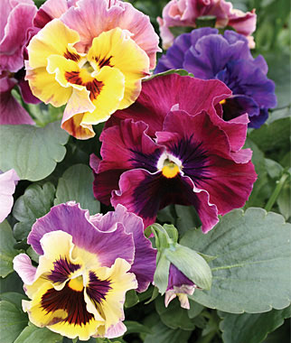
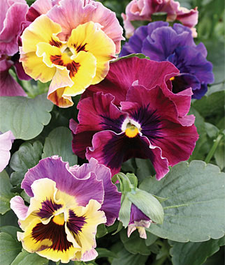

Patti's Posies
Pansies
Enjoy happy and fragrant faces in your fall garden!
 These colorful flowers bloom in winter when the rest of your landscape is brown and dull.
These colorful flowers bloom in winter when the rest of your landscape is brown and dull.
Pansies come in a full range of colors from pastels to primary tones. Some varieties are trailing and work well in hanging baskets and containers.
Pansy blooms are edible so add some to your kitchen garden for delicious and beautiful salads!
Pansies are excellent companion plants for spring flowering bulbs like tulips and daffodils.
| Plant Habit or Use: | Low growing, spreading habit, some are trailing |
| Exposure: | Full to Partial Sun |
| Flower Color: | Red, Pink, White, Yellow, Orange, Rust, Purple |
| Blooming Period: | Fall - Winter |
| Height: | 6 inches |
| Width: | 8 to 10 inches |
| Plant Character: | Annual |
| Water Requirements: | Medium |
| Zone: | 3-9 |
| Uses: | Beds, Borders, Container, Cut Flowers |
 
